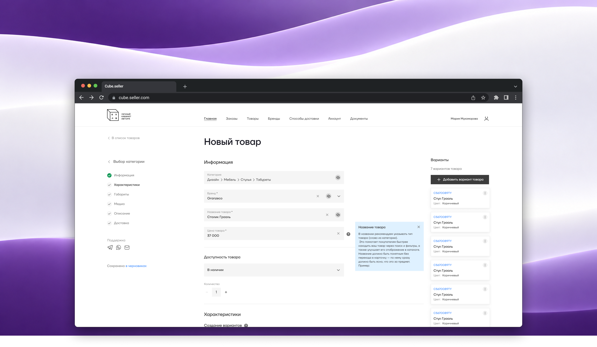
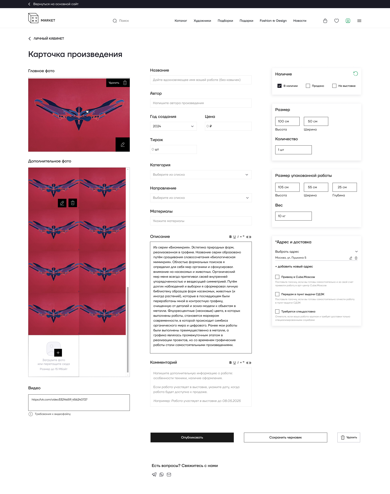
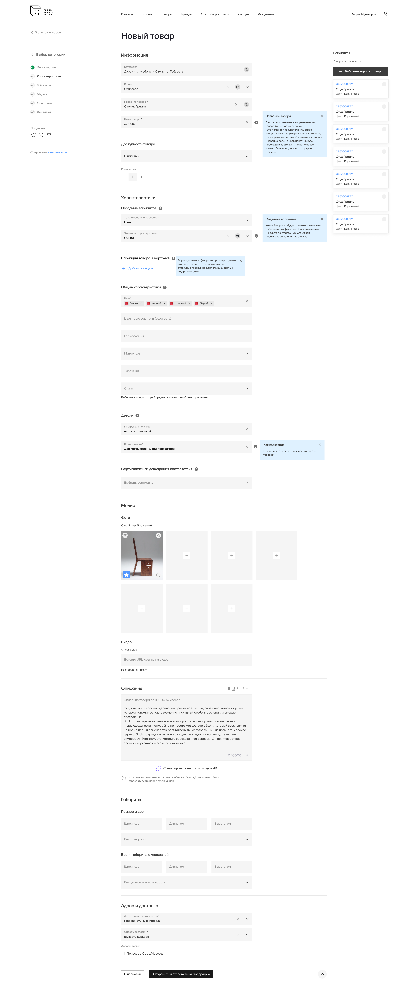
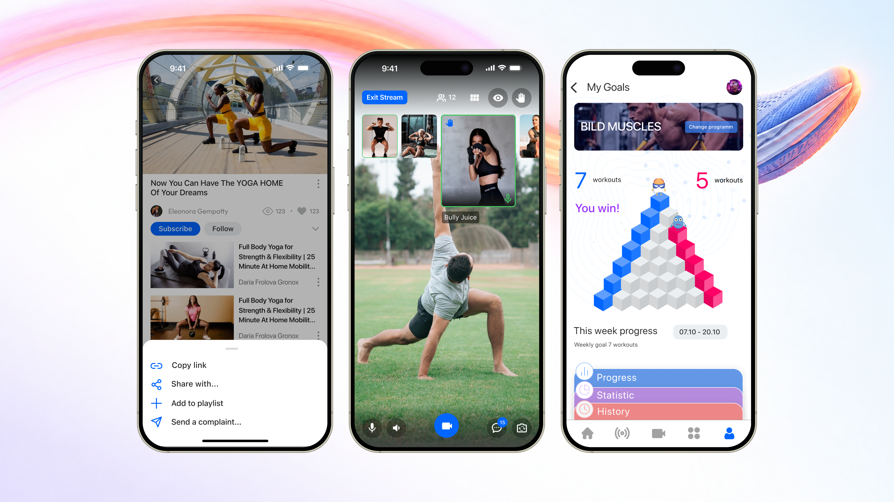

Создала кабинет продавца и развила его под новый ассортимент
Designed a seller account and expanded it for new product categories
От самостоятельной загрузки произведений до управления товарами с вариантами и вариациями. Спроектировала кабинет с нуля для художников, затем новую версию для брендов моды и дизайна.
From self-service artwork uploads to managing products with visual variants and size options. Designed an artist account from scratch, followed by a new version for fashion and design brands.

Перевести работу с продавцами из переписки в продукт
Move seller workflows from correspondence into the product
До появления кабинета художники передавали работы, фотографии, описания и документацию менеджерам. Значительная часть работы с данными выполнялась вручную. Для развития маркетплейса требовалось дать продавцам возможность самостоятельно вести свои товары и заказы.
Before the account existed, artists sent works, photos, descriptions and documentation to managers. Much of the data handling was manual. As the marketplace grew, sellers needed a way to manage their own products and orders.
Работа шла в два этапа: сначала кабинет для художников, затем новая версия для моды и дизайна. В кейсе показываю, как менялись структура формы и модель товара при расширении ассортимента. Кабинет покупателя был отдельной частью моей работы; здесь фокус на инструментах продавца.
The work had two stages: an artist account, then a new version for fashion and design. This case shows how the form and product model evolved with the assortment. Buyer accounts were another part of my work; this case focuses on seller tools.
От модели товара до структуры интерфейса
From the product model to the interface structure
Я спроектировала структуру кабинета, последовательность шагов, логику вариантов и вариаций и таблицу для управления ими. Эти решения предлагала сама; с командой обсуждала техническую реализацию и ограничения.
I designed the account structure, step sequence, variant and variation logic, and the table for managing them. I proposed these design decisions and discussed implementation and constraints with the team.
На первом этапе вместе с проджект-менеджером, куратором галереи, проводили интервью с художниками и проверяли кабинет на пользовательских задачах перед запуском. Эти сессии использовали для проверки сценария работы художника. Количественные результаты тестирования в кейсе не заявляю.
During the first stage, the project manager, also a gallery curator, and I interviewed artists and reviewed the account through user tasks before launch. These sessions informed validation of the artist workflow. I do not claim quantitative testing outcomes in this case.
Дать художнику самостоятельно вести работы и заказы
Enable artists to manage their works and orders
В первой версии основной единицей было произведение искусства. Я спроектировала форму добавления с атрибутами, необходимыми для описания работы и её размещения на площадке. Для тиражных произведений предусмотрели сведения о тираже.
The first version centered on an artwork. I designed an entry form with the information needed to describe and list it, including edition details where relevant.

- Подготовка карточки. Художник добавляет фотографии и описание, прикладывает документы и задаёт цену.
- Listing preparation. Artists add photos and descriptions, attach documents and set a price.
- Характеристики произведения. Направление, материалы, размеры и другие сведения помогают описать работу для каталога. Данные об упаковке и доставке учитываются в том же сценарии.
- Artwork attributes. Art direction, materials, dimensions and other details describe the work for the catalogue. Packaging and delivery information are included in the workflow.
- Дальнейшая работа. Продавец самостоятельно отправляет товар на модерацию и управляет заказами в кабинете.
- Ongoing management. Sellers submit listings for moderation and manage orders through the account.
Поддержать ассортимент, где одного описания товара недостаточно
Support an assortment that needs more than one product description
С появлением моды и дизайна потребовалось учитывать разные исполнения одного товара, размеры, цены и остатки. Я спроектировала новую форму, в которой категория определяет контекст характеристик, а варианты и вариации имеют разную логику представления.
Fashion and design introduced multiple product configurations, sizes, prices and stock levels. I designed a new form with category-relevant attributes and distinct presentation logic for visual variants and variations.
- Категории вместо списка направлений. Иерархия помогает отнести товар к нужной части каталога: например, дизайн, мебель, стулья.
- Categories beyond art directions. A hierarchy places products in the appropriate catalogue branch, such as design, furniture and chairs.
- Пошаговая форма. Информация, характеристики, габариты, медиа, описание и доставка разделены на этапы с индикатором прогресса. Так у каждой группы данных появилось своё место в расширенном сценарии.
- A step-by-step form. Information, attributes, dimensions, media, description and delivery are organized into stages with a progress indicator.
- Характеристики нового ассортимента. Цвет, размер, комплектация и уход дополняют набор данных для моды и дизайна.
- Attributes for the new assortment. Color, size, configuration and care details extend the information model for fashion and design.

Разделить визуальные различия и выбор параметров
Separate visual differences from parameter selection
Я разделила два типа различий. Вариант заметно отличается цветом или формой и получает отдельную карточку со своим фото. Вариация сохраняет основной внешний вид, но меняет параметр: например, размер одежды или габариты столика. Покупатель выбирает её внутри карточки.
I separated two types of differences. A variant differs visibly in color or shape and receives its own listing and photo. A variation keeps the main appearance but changes a parameter, such as clothing size or table dimensions; buyers choose it within the listing.
- В каталоге. Визуально разные исполнения представлены отдельными карточками, поэтому их фотографии можно сравнивать при просмотре ассортимента.
- In the catalogue. Visually distinct configurations have separate listings, so their photos can be compared while browsing.
- Внутри карточки. Размер и другие вариации выбираются без перехода к отдельному товару.
- Within the listing. Size and other variations can be selected without moving to another product.
- В кабинете. Для каждой вариации продавец отдельно указывает цену, остаток и артикул. Таблица связывает эти данные с нужным исполнением товара.
- In the seller account. Sellers set a price, stock level and SKU for each variation. The table associates these values with the relevant configuration.
Это решение связывает две стороны продукта: продавец управляет ассортиментом в кабинете, а покупатель видит соответствующие карточки и параметры выбора на витрине.
This decision connects both sides of the product: sellers manage their assortment in the account, while buyers see the corresponding listings and selection options in the storefront.
Две версии в поэтапном переходе
Two versions in a phased transition
Сейчас обе версии работают параллельно: художники продолжают пользоваться первой, а мода и дизайн новой. Перенос художников на обновлённую систему запланирован следующим этапом. Это текущее состояние внедрения, а не отдельная постоянная архитектура для каждой аудитории.
Both versions are currently live: artists use the first version, while fashion and design use the new one. Artist migration is planned for a subsequent stage. This reflects the current rollout rather than a permanent architecture split.
Также я спроектировала копирование карточки целиком с последующим изменением нужных значений. Оно должно позволить использовать заполненный товар как основу для следующего. Функция находится в очереди разработки и пока не включена в реализованные результаты.
I also designed full listing duplication followed by editing the necessary values, so an existing product can serve as the basis for another. This feature is in the development queue and is not included in the implemented outcomes.
Самостоятельная работа продавца и поддержка новых категорий
Seller self-service and support for new categories
Художники получили работающий кабинет для добавления произведений, документов, цен, отправки на модерацию и управления заказами. Для моды и дизайна реализована новая версия с пошаговой формой, вариантами товара и выбором вариаций.
Artists now have a working account for adding works, documents and prices, submitting listings for moderation and managing orders. Fashion and design have a new version with a step-by-step form, visual variants and selectable variations.
Мой вклад в этом проекте: создать исходный сценарий с нуля, затем расширить модель данных и интерфейс под другой тип ассортимента. Результат описан через возможности, работающие в продукте. Влияние на время работы менеджеров и заполнения формы отдельно не измерялось.
My contribution was to create the initial workflow from scratch, then extend the data model and interface to support a different assortment. The outcome is described through live product capabilities. Changes in manager workload and form completion time have not been measured separately.
Публичный сайт маркетплейса. Кабинет продавца доступен после входа.
Public marketplace website. The seller account requires sign-in.
Открыть cube.marketOpen cube.market